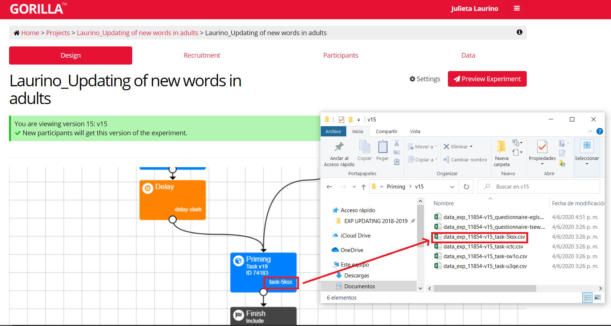

Primero instalo los paquetes que voy a necesitar. Esto lo vas a tener que hacer una única vez (no hace falta correrlo cada vez que corres el script). Es más prolijo si ponemos todos al principio aunque algunos paquetes los usemos más adelante. #{r} install.packages("tidyverse") install.packages("xlsx") #
Luego vamos a setear el directorio de trabajo correspondiente. Acá poné la carpeta en la que hayas guardado los archivos que vamos a usar. Tené en cuenta que tenés que usar una barra hacia la derecha (“/”) o dos hacia la izquierda (“\”) para escribir el directorio. De lo contrario, te va a tirar error.
#{r} setwd("C:/Users/User/Desktop/Taller - Procesamiento de datos") #
knitr::opts_knit$set("C:/Users/User/Desktop/Taller-Procesamiento-de-datos")Te recomiendo que descargues los archivos de gorilla en formato csv. Si son muchos datos el formato excel va a tardar y hasta puede tirar error. Para saber a qué tarea corresponde cada archivo tenés que tener en cuenta que cada uno está identificado por el código del experimento, la versión del mismo y el código de la tarea (alfanumérico de 4 caracteres). Como voy a analizar el priming, me fijo este código alfanumérico en la pantalla de diseño del experimento, como muestro acá abajo:

Dado que hice dos versiones del experimento (versión 14 y 15) tengo dos bases de datos diferentes. Usando read.csv voy a leerlas. Además las voy a almacenar eligiendo un nombre para cada una y usando el operador de asignación <-
data_v14 <- read.csv("data_exp_11854-v14_task-5ksx.csv")
data_v15 <- read.csv("data_exp_11854-v15_task-5ksx.csv")Si bien tengo dos versiones del experimento, quiero tener todos los datos juntos en una única base de datos. Es por eso que vamos a unir las dos bases de datos una arriba de la otra dado que comparten las mismas variables (columnas). Esto se hace con bind_rows.
library(tidyverse)## -- Attaching packages ------------------------------------------------- tidyverse 1.3.0 --## v ggplot2 3.3.0 v purrr 0.3.4
## v tibble 3.0.1 v dplyr 0.8.5
## v tidyr 1.1.0 v stringr 1.4.0
## v readr 1.3.1 v forcats 0.5.0## -- Conflicts ---------------------------------------------------- tidyverse_conflicts() --
## x dplyr::filter() masks stats::filter()
## x dplyr::lag() masks stats::lag()data_raw <- bind_rows(data_v14, data_v15)Acá no lo hago, pero si quisieras identificar a cada base de datos podés agregar dentro de bind_rows el argumento de .id = "nombre de columna". Va a crear una nueva columna llamada “nombre de columna” y va a asignarle un 1 a las filas de la primera base (data_v14) y un 2 a las filas de la segunda (data_v15).
Aclaración: si bien ya instalamos los paquetes y no es necesario instalarlos cada vez que iniciamos R, sí tenemos que cargarlos en nuestra libreria si los usamos. Es por eso que cada vez que abramos este script vamos a tener que correr la línea library(tidiverse).
Los nombres de algunas de las variables (columnas) vienen predeterminados por Gorilla y no son muy intuitivos. Es por eso que me resulta cómodo cambiarlos y así poder identificar los datos de mejor forma. Esto lo podemos hacer de utilizando rename y asignando un nuevo nombre (que escribo primero y entre comillas) a cada una de las columnas a renombrar.
data_raw <- rename(data_raw,"id" = Participant.Public.ID, "group" = randomiser.qg34, "RT" = Reaction.Time, "Acc" = Correct, "relation" = primeType, "familiarity" = trialType, "block" = block_testingSR) Ahora bien, Gorilla nos da muchíiiiisima información acerca de cada participante y para analizar los datos es probable que no la necesitemos toda. Un primer paso para el filtrado de toda esta data es quedarme sólo con las filas que tienen información importante. Para esto uso la función filter, la cual extrae (y se queda con) las filas que cumplen con un criterio lógico (el cual nosotres vamos a especificar).
En este caso, me interesan sólo las respuestas asociadas al target y eso lo determino quedándome sólo con aquellas filas en las que la variable Screen.Name sea target. Además, me quiero quedar sólo con las filas en las que la variable display sea Tarea para no analizar los datos que corresponden al demo inicial.
data_raw <- filter (data_raw, Screen.Name == "target", display == "Tarea") Fijate que todo esto se indica con el operador relacional == el cual chequea si cada elemento del primer vector es igual al segundo (no confundir con el operador = que se usa para asignar).
Otro paso importante para descartar información que no me interesa analizar es la selección de columnas. Para esto podemos usar select y especificar con cuáles queremos quedarnos. También podríamos aclarar con qué columnas no queremos quedarnos (es decir, cuáles queremos que se vayan) agregando un - antes de cada nombre.
data_raw <- select (data_raw, id, group, relation, familiarity, block, prime, target, Response, Acc, RT) Si bien no es un paso esencial para el análisis de datos, a mí me gusta y ayuda a la visualización de los datos. Por eso agregué este primer bonus track en donde vamos a ordenar las filas Uso arrange para ordenar las filas.
data_raw <- arrange (data_raw, group, id, familiarity, block, target)Para analizar RTs: uso mutate para generar una nueva columna que tenga sólo los RTs en los que la rta fue correcta.
data_raw <- mutate(data_raw, accRT = ifelse(Acc == 1, RT, NA))data_raw <- bind_rows(data_v14, data_v15) %>%
rename("id" = Participant.Public.ID, "group" = randomiser.qg34, "RT" = Reaction.Time, "Acc" = Correct, "relation" = primeType, "familiarity" = trialType, "block" = block_testingSR) %>%
filter (Screen.Name == "target", display == "Tarea") %>%
select (id, group, relation, familiarity, block, prime, target, Response, Acc, RT) %>%
arrange (group, id, familiarity, block, target) %>%
mutate (accRT = ifelse(Acc == 1, RT, NA))trials_count <- data_raw %>%
group_by(id) %>%
count()